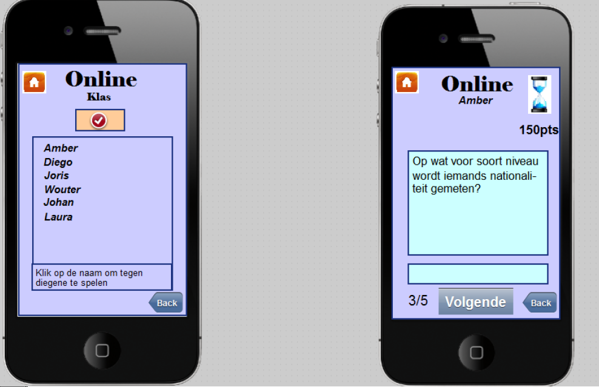
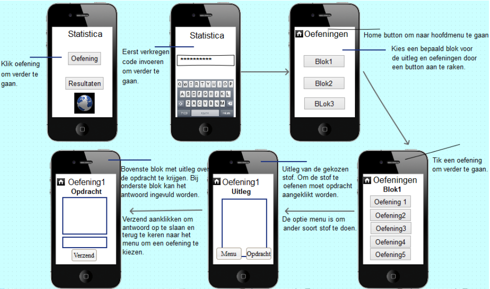
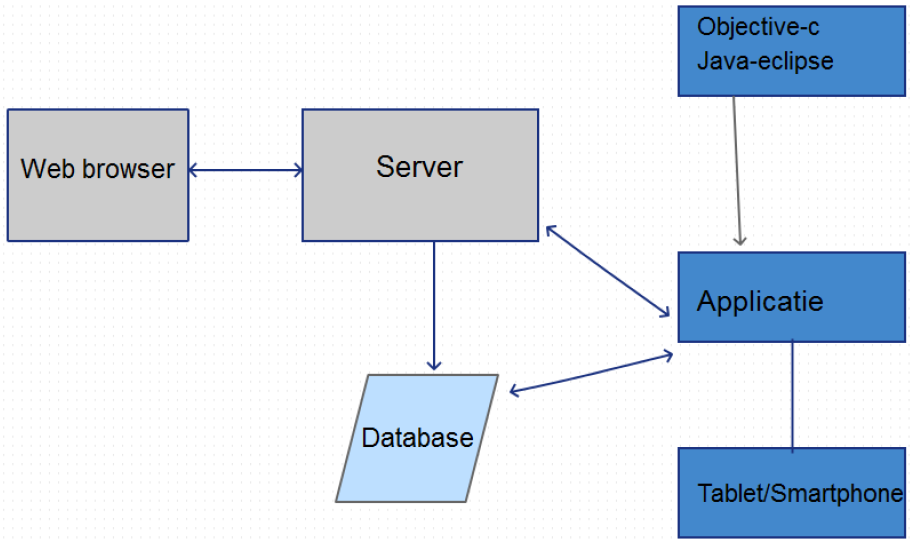

Rode draad opdracht
Dit is de individuele opdracht van blok 2. Op deze pagina zijn de drie bijhorende ontwerpen van mijn idee te vinden. Ik heb de keuze gemaakt voor de opdracht over hoe je kinderen de beginselen van de statistiek kan leren.
Grafisch ontwerp
Afbeelding: een online game in de applicatie. De gebruiker kan eerst iemand uit de klas, die online is, uitdagen. En als de uitnodiging is geaccepteerd, spelen ze tegen elkaar en hun doel is om zoveel mogelijk punten te scoren door het beantwoorden van de vragen juist en snel te doen.
Er is gekozen voor heldere kleuren om de applicatie zo overzichtelijk te houden voor de gebruiker. Dit geldt ook voor de fonts. De fonts zijn Elephant en Arial. Ook de knoppen hebben frisse kleuren, maar allemaal een eigen kleur om zo de buttons te scheiden. De heldere kleuren zorgen er wel voor dat de applicatie niet saai wordt, maar het blijft wel een serieus karakter houden. De kopjes zijn vetgedrukt en hebben een groot lettertype om meteen duidelijkheid te verschaffen voor de gebruiker waar hij zich bevindt in de applicatie. De vraag en uitleg, over het aanklikken van een speler, zijn niet vetgedrukt. De namen in de lijst zijn vetgedrukt om zo aan te geven dat ze klikbaar zijn. Er zit een gewone regelafstand tussen de zinnen bij de vraag, bij de namenlijst is gekozen voor een iets grotere regelafstand, zodat de gebruiker eenvoudiger op de naam kan klikken zonder een andere naam aan te klikken.
Interactieontwerp
Afbeelding: Wireframe van de keuze oefening bij het hoofdmenu.
Leerlingen vinden leren uit boeken vaak vervelend en oninteressant. Dit geldt ook bij de beginselen van statistiek. Een applicatie moet dit probleem verhelpenn. Leerlingen krijgen via de applicatie uitleg over een bepaald onderwerp van statistiek en kunnen hun opgedane kennis gelijk in praktijk brengen, omdat er altijd een oefening volgt bij een uitleg. De leraar en leerlingen krijgen vooraf dat zij beginnen met de applicatie een speciale code opgestuurd en kunnen zo eenvoudig de game starten. De applicatie maakt het lesgeven voor de leraar ook makkelijker. Studenten die de stof snel onder de knie hebben kunnen verder gaan. Terwijl leerlingen, die de stof minder snel doorhebben, meer oefeningen kunnen doen. Ook kan de leraar via de applicatie in de gaten houden of de leerlingen hun werk doen en kan hij extra oefeningen geven als een leerling een bepaald onderwerp niet snapt. De leerling kan zelf ook snel zien wat zijn goede en zwakke punten zijn. Leerlingen kunnen met hun opgedane kennis ook binnen de klas tegen elkaar spelen. Tevens kunnen zij tegen mensen buiten hun klas online spelen. Uit onderzoek is gebleken dat kinderen door het competitieve element de stoffen nog beter gaan beheerser en dat zij het ook uitdagend vinden om te doen http://www.education.com/reference/article/competition/.
Technisch ontwerp

Afbeelding: De benodigdheden voor de applicatie, en welke benodigdheden een verband hebben.
Het is mogelijk om deze benodigdheden te regelen. Er zijn hedendaags programmeurs beschikbaar, die deze programmeertalen beheersen. Er zijn geen hoge kosten verbonden aan het aanschaffen en beheren van databases en servers(http://www.kpn.com/zakelijk/cloud/netwerkenendatacenters/diensten/serverhosting.htm). Om de applicatie te gebruiken, heeft de gebruiker een smartphone of tablet nodig. Dit is haalbaar om aan 12 jarigen te introduceren, omdat uit onderzoek van nu.nl(http://www.nutech.nl/mobiel/3523820/tienersmassaalsmartphone.html) blijkt dat 74% van de 12 jarigen over een smartphone beschikt. Tevens kunnen tablets, die soms aanwezig zijn in de klas, het tekort aanvullen. Om de online functie van de app te gebruiken, is er verbinding met het internet nodig. Dit hoeft geen probleem te vormen, omdat tegenwoordig al 67% van de scholen in het voortgezet onderwijs wifi heeft (http://www.dutchcowboys.nl/opleidingen/23166).